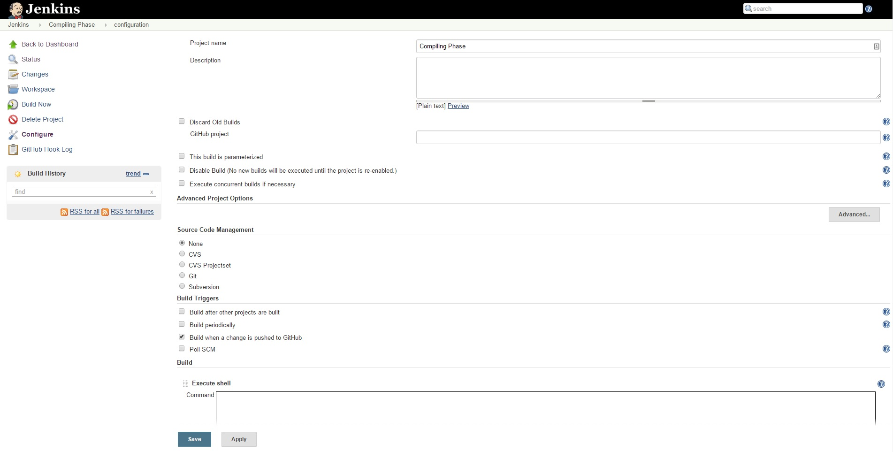

Now we will make our first job and have it set to compile a microsoft app. Choose new item and give it a good descriptive name such as "Compiling Phase". First add all of the build steps, these include any scripts or similar that you may need. 
Next we'll focus on the git aspect, first you need to select git under Source Code Management. This will ask for your Repository URL, a place to add your credentials, and which branch to build from. If you do not have any cleaning steps in your normal build process then it may be advisable to select "Clean before checkout" under additional behaviors. Select "Build when a change is pushed to GitHub" under "Build Triggers".